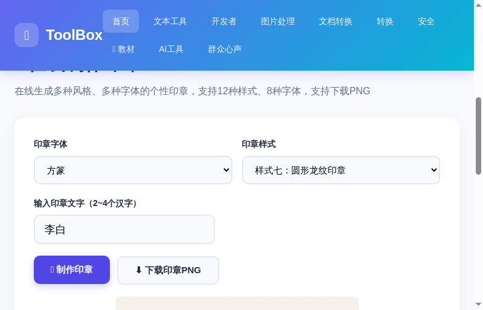
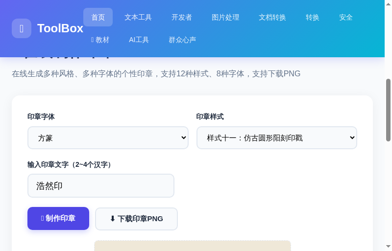

在线制作印章：3步生成你的专属电子印章
你有没有遇到过这种情况？签电子合同需要盖章，手边没有实体印章；做设计加水印，想要一个个性签名图案；或者只是想给朋友做一枚有趣的"名章"当礼物……
在线制作印章 就是解决这些问题的。选好字体和样式，输入你的名字，3 步就能生成一枚可以直接下载的电子印章。支持 12 种样式、8 种字体，从传统的方形名章到仿古龙纹印章，从质朴的阴刻到精致的阳刻——总有一款适合你。
而且全程在浏览器里完成，不需要装软件，不需要注册账号，完全免费。
打开印章制作工具
进入 ToolBox 首页，点击「图片处理」分类，找到「在线制作印章」工具卡片；或者直接点击下方按钮快速进入。
工具的界面非常简洁，从上到下依次是：字体选择、样式选择、文字输入、制作按钮 和 预览区域。默认已经预填了"李白"两个字，并选择了方篆字体和方形阳刻圆角样式，打开就能看到效果。

选样式、选字体、输入文字
这是最有趣的一步。你可以像搭积木一样组合出自己想要的印章效果：
🎨 12 种印章样式一览
| 样式 | 名称 | 适用场景 |
|---|---|---|
| 样式一 | 方形阳刻圆角 | 日常签名、电子合同，最百搭 |
| 样式二 | 方形阴刻圆角 | 白底印章效果，适合浅色背景 |
| 样式三 | 方形阳刻印章 | 传统名章，书法作品落款 |
| 样式四 | 方形阴刻印章 | 古朴风格，适合书画作品 |
| 样式五 | 圆形阴刻印章 | 公章风格，正式文件 |
| 样式六 | 圆形阳刻印章 | 圆章效果，水印专用 |
| 样式七 | 圆形龙纹印章 | 最炫酷！龙纹边框，个性十足 🔥 |
| 样式八 | 长方形印章 | 横长条，适合狭小空间 |
| 样式九 | 仿古方形阴刻 | 仿古做旧，古风爱好者首选 |
| 样式十 | 仿古方形阳刻汉印 | 汉代印章风格，有历史感 |
| 样式十一 | 仿古圆形阳刻印戳 | 印戳风格，复古文艺 🔥 |
| 样式十二 | 仿古圆形阴刻 | 意境感强，适合艺术创作 |
🔤 8 种字体可选
方篆（默认）、魏碑、宋体、篆书、隶书、黑体、圆体、金文。每种字体配合不同的样式效果完全不同，建议多试几种组合看看效果。
下面两张图展示了不同样式 + 不同文字的效果对比：


生成并下载 PNG 图片
选好组合后，点击「🖌️ 制作印章」按钮，印章就会立刻渲染在画布上。如果满意，点击「⬇️ 下载印章PNG」按钮，图片会自动保存到你的电脑。
下载的图片是 400×400 像素的 PNG 格式，带透明背景（阴刻样式为白底），可以直接用于电子文档、水印、设计素材等场景。
🎯 电子印章的 5 个实用场景
做好的印章图片能用在哪些地方？这里列举几个最常见的场景：
❓ 常见问题
Q：生成的印章能做商业用途吗？
可以。工具本身不限制用途，生成的图片归你所有。
Q：能保存为透明背景的图片吗？
阳刻（红字白底）样式默认透明背景，下载后可直接叠加使用。阴刻（白字红底）样式为白底。
Q：最多能输入几个字？
支持 2~4 个汉字。2 个字效果最紧凑，3~4 个字建议选较宽的仿古样式。
Q：能做出和实体印章一样的效果吗？
电子印章是数字生成的，效果精美但无法完全模拟实体印章的凹凸感。如果需要实体印章，建议用这个工具设计好样式后，找刻章店制作。
📌 还没试过？现在就去生成一枚属于自己的电子印章吧
🎨 去制作印章 →